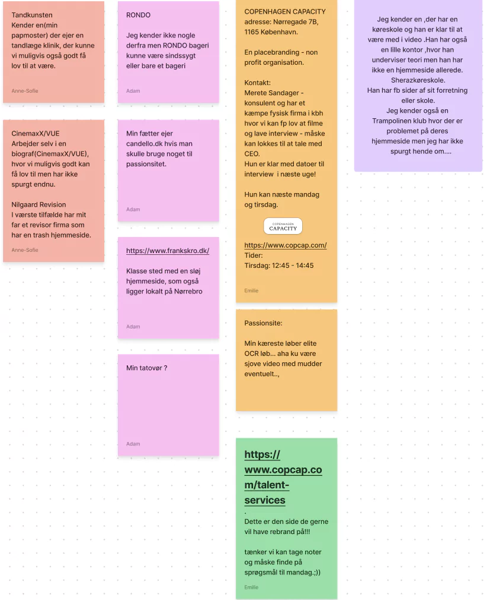
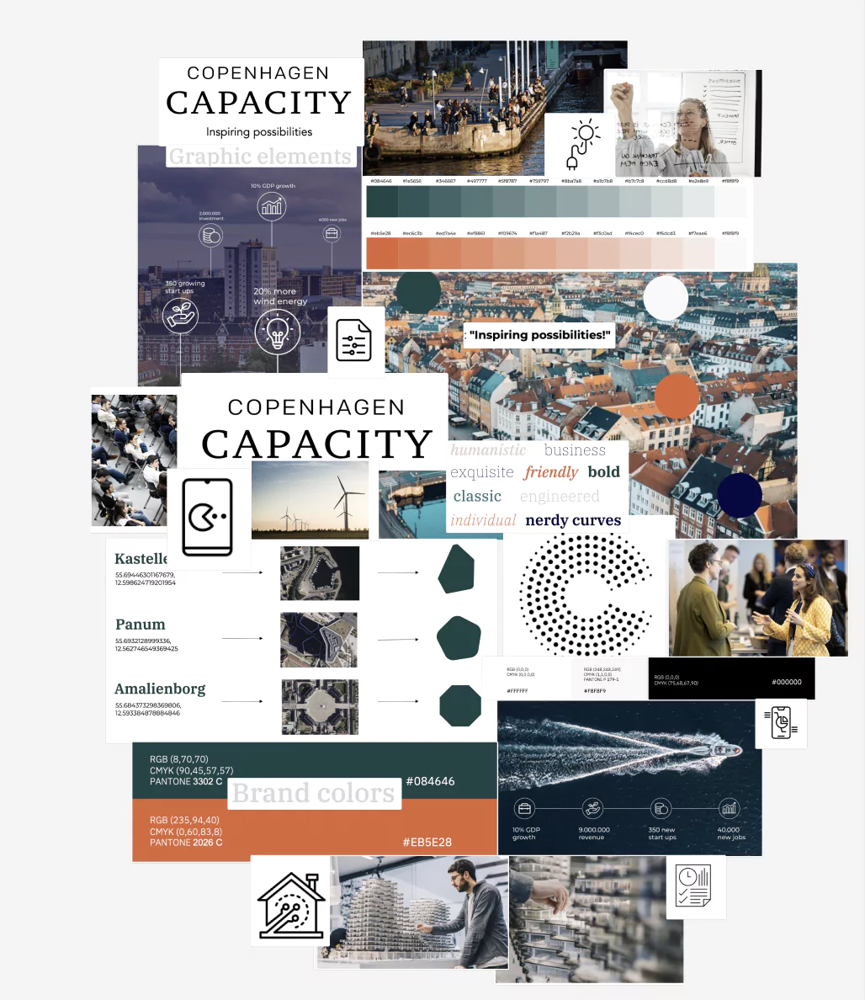
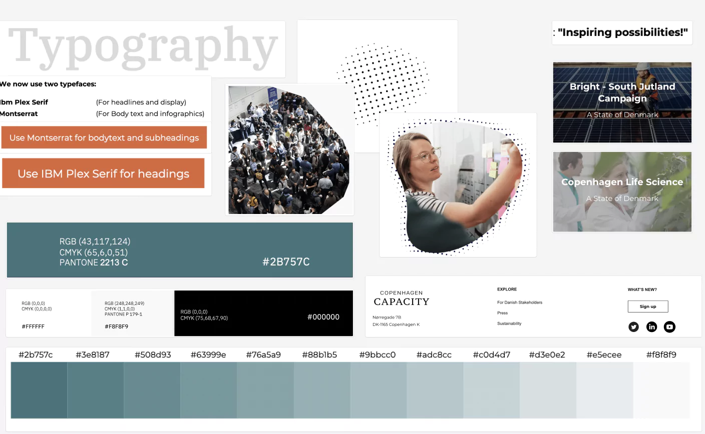
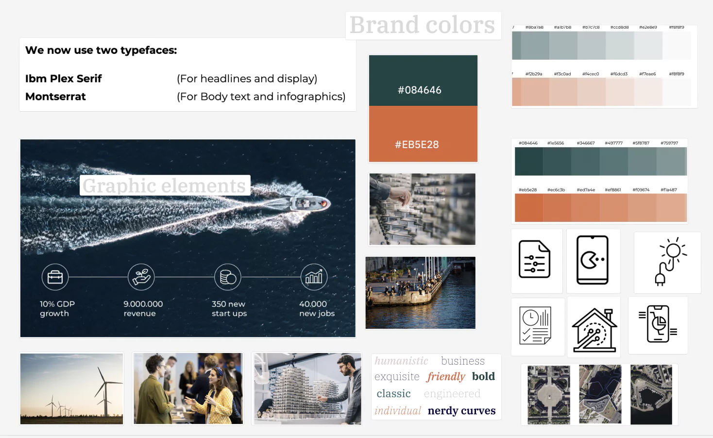
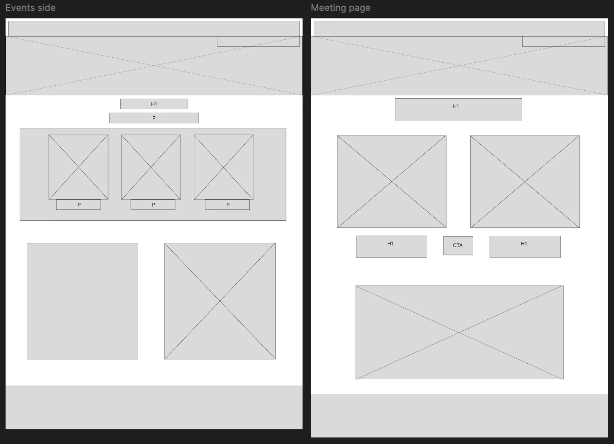
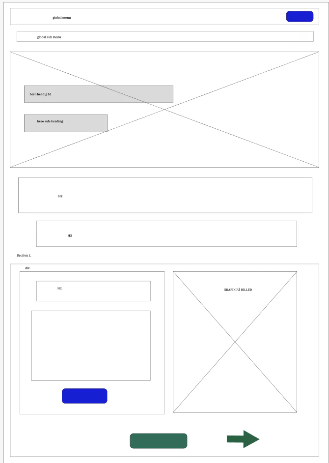
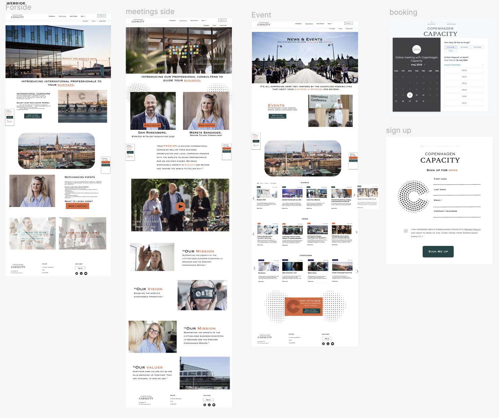

I tema 5 del 2 skulle vi redesigne en allerede eksiterende virksomheds website. Vi var
en gruppe på 4 hvor vi sammen skulle finde en virksomhed at arbejde med. Vi lavede derfor en
brainstorm, og gik i gang med at tage kontakt til de forskellige virksomheder.
Vi endte med
virksomheden "Copenhagen Capacity". Det er en konsulent virksomhed som tiltrækker talenter fra
udlandet til danske virksomheder.
Da vi havde virksomheden på plads, gik vi igang med research deres hjemmeside i bund. Vi
udviklede et stiletyle og wireframes for deres eksiterende hjemmeside. Vi fik også udleveret en
designguide af virksomheden, som gjorde at vi var en smule mere låste i forhold til design delen.
Men det lærte os hvordan det reelt foregår i virkeligheden og vi lærte at skabe et produkt udfra
kundens ønsker.
Under processen blev vi også introduceret til siden "Trello" som kan bruges til at skabe overblik
over hvilke dele vi er igang med, skal fikse og er færdige med, samt hvem der udfører opgaven. Da vi
var sammen stortset hver dag, og lavede "Daily Scrums" blev Trello ikke brugt så meget.
Virksomhedssite
Processdokumentation
I dette tema skulle vi som en 4 mands gruppe arbejde sammen omkring at redesigne en virkelig virksomheds hjemmeside. Vi endte med virksomheden "Copenhagen Capacity".
Dette blev vores moodboard til vores redesign. Vi ønskede lidt mere farve på hjemmesiden, som kunne skabe lidt mere liv.
Det oprindelige styletile på virksomhedens hjemmeside:
Vores redesign af styletile:
Udkast af vores wireframes
 Designet af vores prototype
